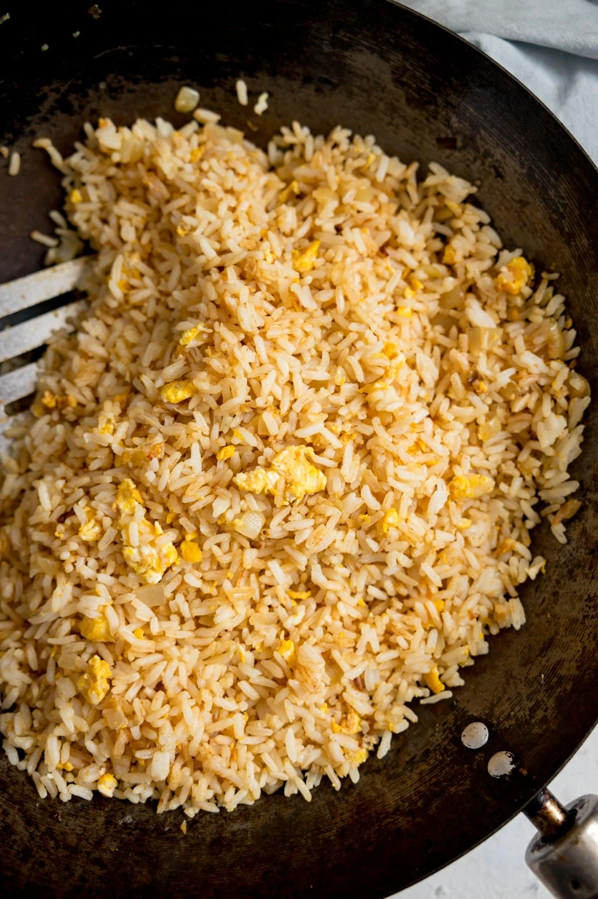

Egg Fried Rice

Description:
Simplistic and delicious! Perfect for breakfast, lunch, or dinner.
Quick and easy to cook for those of any skill level.
Ingredients:
- Plain white rice - Cooked
- 1-2 Eggs
- Light or Dark Soy Sauce
- Lemon Juice
- Frying pan or Wok
- Spatula
- Extra virgin olive oil
- Salt and Pepper
Instructions:
- Preheat frying pan or wok, medium to high heat
- Coat pan/wok with 1 tablespoon of olive oil
- Add rice to pan, stirring with spatula to prevent sticking
- Pushing rice to side, crack eggs into pan and add a splash of soy sauce
- Scramble eggs with spatula, then mix into rice
- Add more soy sauce, 1 1/2 - 2 tablespoons
- Sprinkle on salt and pepper
- Add 1 tablespoon Lemon Juice
- Final stir before serving.
Home